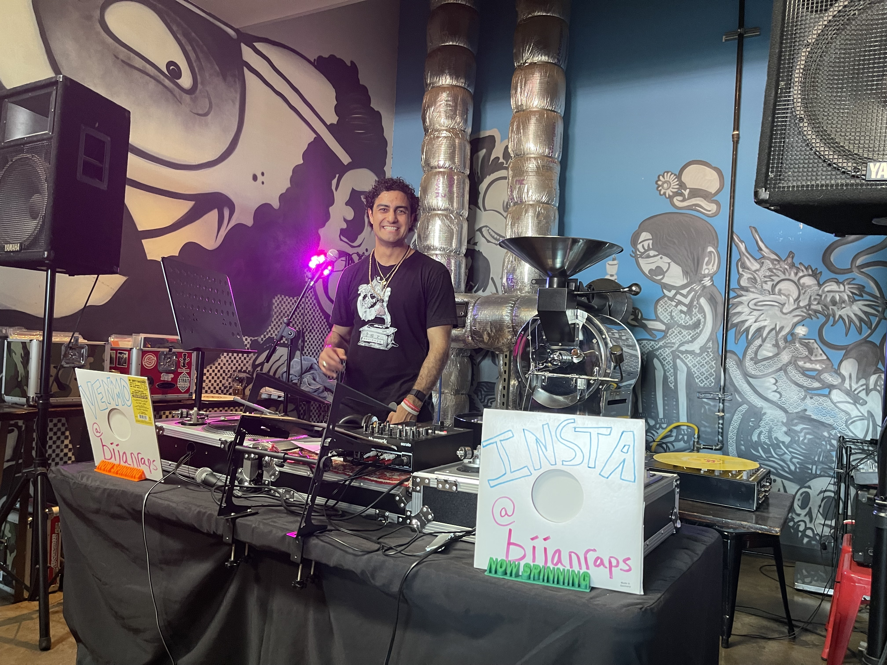

Software | Rapping | Knowledge
My First Show - Debut
I'm taking a break from Software Engineering.
I had my first show on Friday, August 11th 2023.
It was incredible, had my turntables/wax and dropped my favorite Hip Hop tracks and some of my own raps/freestyles/poetry.
The 50th Anniversary of Hip Hop was such a great experience in Austin. Big ups to Greg for putting me on for this show.


Failure is just a stepping stone to success
At the end of last year, 2022, I took the AWS Certified DevOps Engineer - Professional Exam and failed it on my first attempt, obtaining a 699 out of 1000 where 750 would have been passing.
When I shared it with a few of my Developer friends I was reminded that "Failure is just a stepping stone to success". I feel fortunate to have this belief in my belief system after working in Engineering for several years, I also feel fortunate for the friend who reminded me of this (you know who you are ;).
I recently passed that exam at the beginning of February 2023, and I feel it is worth reflecting on a bit, so I am writing this post in hopes to remind my future self that "failure" is just part of the process; bonus points for if I inspire anyone else to attempt something difficult.
How do I learn Engineering and new Technologies?
I am a self-taught technologist who started working as a Level 1 support rep nearly 10 years ago in 2013, who now for the last several years has been in responsible for production systems.
I have taken a few course at my local Community College but ultimately the majority of my learning has taken place on the job or in self learning outside of work.
The most value tool/skill I have encountered for learning new technologies is to spend 1 hour a day (ideally at your ideal learning environment, for me that is in the morning) learning something new.
The progressive skill of learning requires time and patience and space to manifest and most importantly consistency (and resilience to keep up that consistency).
If you only spend a few hours a few times, you will not realize the gains of getting deep into a subject compared to someone who comes back each day for training.
A few more tips
- It is ok to fail, try not to wait 6 months to a year before your next attempt. You will be not be starting over completely so take the next attempt a month or two later.
- Try adding a few new materials to help you study. Using note cards, picking up a new practice test on Udemy and going over my notes helped me on my 2nd attempt.
- Share your learning experience with others. Learning shouldn't have to be a solo event, if you can, pair up with a friend or build accountability with others so that you stay consistent and growing.
Below are a few Online Learning sites that have been helpful in my journey to obtain more certifications as well as skills as an engineer and developer.
A Cloud Guru
If you want to learn Cloud Technologies, I couldn't recommend this site enough. I used to be a member of Linux Academy before it was bought and mergd into A Cloud Guru (Parent Company Pluralsight) and this site has what you are looking for.
They have sandbox cloud accounts for all the major cloud technologies so that you can have real world hands-on experience to play with infrastructure.
They also have courses designed to help you pass most certifications with practice tests and quiz's and hands on labs.
This was what I used most to help me pass the AWS DevOps Professional Certification.
Real Python
If you are not a developer and are interested in learning a programming language, I couldn't recommend Python enough as a good language to start on.
Real Python is accessible to people on all levels and I frequently find their content extraordinary and very digestible.
They even have a great podcast that talks about different articles and new things in the Python world.
I am no longer doing daily Python development work, but I keep my membership to this account as I love the stuff they come out with and using them as a reference when I have a challenging Python problem is so helpful.
O'Reilly
My last company had a subscription to the O'Reilly Catalog of Books and Courses and what a treasure that was for my learning.
I used their content to help me learn Linux and passed my RHCSA (Red Hat Certified Systems Administrator).
I started teaching myself GO and a few other things from this site and I can't recommend it enough.
If you are an Engineer or Dev, chances are you have either purchased/borrowed or seen one of the O'Reilly books with a creature or animal on the front cover as they cover almost any technology you can think of.
Most of my favorite books are hosted on their site that you can read with a subscription; The Phoenix Project, Site Reliability Engineering, Software Engineering at Google to name a few.
Udemy
Udemy has a ton of great courses, in particular if you are studying for a multiple choice exam they likely have affordable practice tests for an exam you may be working on.
There are also hands-on courses that you can follow along with experts who have written the textbook.
A few of my favorites so far have been learning Kubernetes with KodeKloud with Mumsahd Mannambeth and Automating the boring stuff with Al Sweigart.
Whether studying for a certification or learning a new skill or building a new tool/project Udemy has lots to offer.
Laracasts
This is the newest site I have started using for learning, specifically to learn PHP, Laravel and Vue.
I am a PHP, JavaScript and TypeScript novice and those are programming languages used heavily at my new job, so I figured it was time to get more into these technologies.
I am still new to the platform but so far in the first course I have taken I am loving it.
To me, being a newcomer or a novice is exciting as I know that in learning something new I am going to make way more progress than going deeper into a subject I am more familiar with.
The greatest gains are to be had by someone who hasn't ever even started a new type of training.
This beginners mindset can be intimating, but maintaining a curiosity in learning and being ok with being wrong has been helpful in me overcoming the uncomfortable feeling of "not getting things right".
This was my first post of this sort, so let me know if this resonates with you at all and I may create some follow-ups on the subject and learning.
Software Delivery
The thing that excites me most in my work is figuring out how to build and maintain better systems to delivery software updates.
Below is a Quote from the DevOps Handbook from a Case Study Highlighting the importance of understanding the changes that we make.
In 2004, Gene Kim, Kevin Behr and George Spafford note that high-performing organizations recognize that
80% of all outages are caused by change
and 80% of MTTR is spent trying to determine what changed.
1. Automation at Scale
Automation at Scale means when we know a fix is available, we are primarily focused on delivering that fix to All Customers and Environments.
Applying a specific minor update to an individual customer in an Adhoc way is also valuable, and there is a place for transformational Self Service however the Ultimate focus for every organization is Automation at Scale.
Embracing Automation means that we will seek to eliminate as much Toil (manual work that is repeatable) to focus energy more closely on automation.
2. Standardization across Applications
Standardization whether in the form of Naming Conventions, configuration, workflows, technologies or frameworks is important.
Requiring standards like only allowing certain naming conventions in Production services or even lower environments means you won't have automation break and there won't be special snowflakes to handle manually via toil.
Without consolidation of frameworks you end up supporting 3 different types of drivers, OS's, or frameworks.
Applying a very rigid standard across all elements of customers allows anomaly detection and the ability to understand immediately if a service belongs or not.
Most companies pay for services to be running because they don't know if they can turn it off or if they know they can turn it off they just don't know how to because of technical debt.
Standardization across Applications allows for Automation at Scale.
3. Continuous Feedback Loop
In the DevOps Handbook The Second Way describes the principles of creating fast and continuous feedback loops from Operations to Development.
By doing this, we shorten and amplify feedback loops so that we can see problems as they occur and radiate this information to everyone in the value stream.
This allows us to quickly find and fix problems earlier in the software development life cycle, ideally long before they cause a catastrophic failure.
4. Error Budgets
Not all services are equally performant, some have a much older code base which is more large and complicated while others might be more green field and have fewer dependencies.
Services should be evaluated based on the number of issues that occur throughout the lifecycle of their release, customer impact (outages/degradation of service) is one of the most valuable measures to determining impact.
By better understanding the risk and challenges with each service delivered (and by breaking down Monolithic apps into Microservices) we can provide better Gating as to which services will be released and which ones will require more work.
Error budgets are also a great way determine if Engineering should have a clear runway for new features or if code quality requires more robust testing.
5. Test in a Lower Environment First
This one almost seems too obvious to be in the list, however one might be surprised how many Production services get deployed and run for customers without a lower environment first.
Always include lower environment testing and deployment prior to delivering (or even troubleshooting) in Production first.
6. Errors should be captured and improved
Every error is important. Often in software engineering a benign error will go overlooked and continuously be logged or returning a non 200 HTTP response.
Even if the error is "Known" or could be classified as non-impactful (red herring in troubleshooting), that error still takes up space in the minds of engineers, in the logs/metrics/traces and ultimately makes an application less observable.
7. Break up deployments to enable faster delivery
By breaking up deployments into small batches to deliver updates more quickly and regularly we can reduce risk of big issues showing up across multitudes of customers, correcting issues as they are found in the wild.
Feature Flags are a valuable way to deliver more modular updates of components in which we can deliver deliberate updates of increasing surface area to customers as we gain confidence in the updates before the entirety is delivered.
8. Data Driven Decision making
Embracing telemetry to build Observability into our updates help us understand the changes we are introducing into Production.
We can test the code that is being cut by Development pre and post update for Quality and provide that data upstream.
We can also test our deployment pipeline to determine if any environmental issues or deployment issues happen pre and post update on the side of Operations.
9. Decommission apps, environments and frameworks
Letting applications, frameworks and environments run when they are not needed is incredibly expensive.
It is much easier to deploy new services than to know when and how we can turn off old services, or to understand if they are still needed.
By creating a central software delivery and deployment mechanism we can more assuredly understand what applications may be running but could be flagged for decommisioning.
10. Continuous Delivery to Continuous Deployment
Making use of all the tools and experiences to mitigate risk, monitor quality and improve software delivery speed we eventually get to the place of Continuous Deployment.
Continuous Deployment is where each change committed to version control is integrated, tested and deployed into production.
Jez Humble defines Continuous Deployment as the following.
When all developers are working in small batches on trunk, or everyone is working off trunk in short-lived feature branches that get merged to trunk regularly, and when trunk is always kept in a releasable state, and when we can release on demand at the push of a button during normal business hours, we are doing continuous delivery. Developers get fast feedback when they introduce any regression errors, which include defects, performance issues, security issues, usability issues, etc. When these issues are found, they are fixed immediately so that trunk is always deployable.
In addition to the above, when we are deploying good builds into production on a regular basis through self-service (being deployed by Dev or by Ops)—which typically means that we are deploying to production at least once per day per developer, or perhaps even automatically deploying every change a developer commits—this is when we are engaging in continuous deployment.
Skydiving

Jumping out of planes might seem insane
the feelings of fear change and re-arrange
perspective is my favorite part of the brain
teaching ourselves to be even more highly trained

My excitement is one of my favorite qualities
Equanimity, Stoicism and a capricious wisdom
Engineering paths to freedom and graphs of the larger lump sum
my favorite ones are most simple in principle

It took time to learn to stand tall
even more time to embrace the fall
visualizing the drop while taking cold showers a lot
now cold showers are how I cool off in the Texas hot
Went for a run to Barton Springs
saw James on his 60th with family relaxing
in a few hours jumped out the flying bus

With Love you have to trust
There will always be a way
give more than you take away
for it is the way
About me

Howdy! You found me on the internet :), this is my personal website to share with the rest of the digital world. I am a first generation Persian (Iranian) American who grew up in Austin, Texas. My day job was working at Atmosphere as a Senior DevOps Engineer. I am a big fan of the following.
- Hiking up Mountains
- Meditation/Sauna/Cold Plunges/Yoga/Lifting Weights/Running/Float Tanks
- Learning in public
- Poetry, Rapping, Freestyling
I am looking forward to more updates to come.
You can reach me via email here at bijan@bijanrahnamai.com
You can find my GitHub here at https://github.com/BijanJohn
You can find my LinkedIn here at https://www.linkedin.com/in/bijan-rahnamai/
You can find my Instagram here https://www.instagram.com/bijanraps/